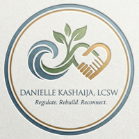

Anxiety & Panic
Somatic calming, thought defusion, and exposure at your pace to reduce spirals and restore confidence.

Trauma-informed. Telehealth-ready. Evidence-based.
Danielle Kashaija, LCSW, helps adults, teens, couples, and families regulate nervous systems, rebuild confidence, and reconnect with purpose—through secure online sessions across North Carolina and telehealth-friendly neighboring states.


U.S. adults experience PTSD each year—effective therapy can shorten recovery to 6–12 months for many.
Adults in a 2024 statewide survey reported being told they had depression—Danielle integrates CBT & behavioral activation.
U.S. adults carry an ADHD diagnosis—executive-function coaching is woven into sessions.
Meet Danielle
Danielle Kashaija is a Licensed Clinical Social Worker offering secure video therapy to adults, youth, couples, and families. Clients value her warm, collaborative approach and the way she pairs nervous-system education with practical skills for daily life.
Focus areas
Somatic calming, thought defusion, and exposure at your pace to reduce spirals and restore confidence.
Behavioral activation, values mapping, and gentle structure to help you move from shutdown to momentum.
Window-of-tolerance work, narrative repair, and resourcing so triggers lose their grip.
Weekly planning rituals, body-doubling strategies, and realistic routines for focus and follow-through.
Attachment-informed couples and family sessions that strengthen safety, communication, and shared goals.
Support around career pivots, caregiving, pregnancy/postpartum mood shifts, and boundary setting.
Ways to work together
50-minute sessions focused on regulating your nervous system, reframing unhelpful thoughts, and building daily habits that hold.
Restore communication, set workable agreements, and navigate life transitions without losing connection.
Four-week tracks for sleep, panic reduction, or executive function with weekly check-ins and worksheets.
Short-term virtual groups for anxiety regulation and women’s support. Join the waitlist to be notified.
Why this work matters
PTSD touches 3.5% of U.S. adults each year, a 2024 survey found 26.8% of adults had been told they had depression, and about 6% of adults now carry an ADHD diagnosis. Danielle’s integrated, skills-forward approach addresses the overlap between these conditions so clients see relief faster and sustain it longer.
*Self-reported from recent client check-ins; anonymized and aggregated.
Start a conversation
Share what you’re facing, ask questions, and leave with a next step. Online sessions available weekday evenings and select Saturdays.
HIPAA-compliant video platform · Sliding scale spots available